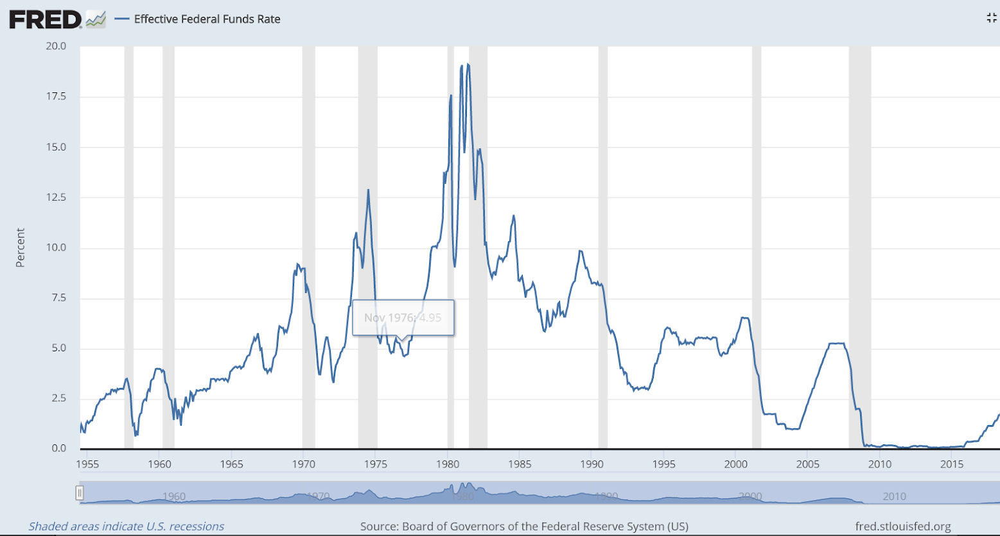

Steady Arc LLC
One of the major questions for people interested in investing in real estate is WHY? What makes real estate a better investment than the stock market or other investments? Below, we’ll review a few good reasons real estate is one of the best long term investments ] to really build wealth.
1 - Your income from real estate tracks inflation.
While the Federal Reserve is focused on keeping inflation low, it does still exist and chips away at your investments. But the cash flow from real estate automatically adjusts to market conditions. The graph below shows that since 1999 the price of housing (i.e. the rent you receive and the ultimate sale price of the property) tracks with the CPI for all items.
2 - Low correlation with stock market
A good investment profile includes both stocks and other investments. Stocks have some advantages, but also have limitations. Stocks are an intangible asset that has no intrinsic value until it is sold. The returns on individual stocks are extremely volatile and can and are subject to quick market shifts. Even Index Funds are subject to market shifts. Stock Market crashes occur over the course of days or weeks. So you have to pay attention to your portfolio if you’re going to actively invest.
Real estate is a counterpoint to the volatility and risk involved in the stock market. You own a tangible asset that can be insured against physical loss. Returns are more predictable and any market cycles play out over the course of months and years, not days. There are also substantial tax benefits that are associated with real estate investments like depreciation and deduction of expenses.
3 - Real Estate is a great store of long term value.
Real estate, since it’s a tangible asset, is a good store of long term value. Macro-economic trends point to real estate values increasing over the long term. There are a few factors influencing this.
a) The Number of renters is increasing
ore and more households are renting. The Pew Research study of Census data below shows that there are a higher percentage of renters now than since 1965. The trend for the last 15 years shows a steady and significant increase in the number of renting households.
b) Housing inventory is down
One of the reasons the number of renting households is increasing is that the inventory of available homes is decreasing. Units available for rent have been decreasing since a peak at the end of the Great Recession and are currently at their lowest levels since 2003.
c) Housing inventory is likely to stay down.
One of the main drivers of housing inventory is the supply of new housing. Despite the increasing numbers of renters, the number of housing starts is low.
The majority of the cost of new housing is labor, which will be in short supply for the foreseeable future. Young workers have not been entering the trades, which has been driving up the cost of construction. In 2012, the average age of a skilled tradesperson was 45. These workers will soon be retiring and few younger workers are set to take up the jobs.
In addition to a shortage of workers, the COVID pandemic has also spiked the price of materials. Prices for construction lumber have spiked 75% from January 2020 to January 2021.
Steel and lumber prices have risen over the past year.
These increased costs will keep the supply of housing constrained and drive up the costs of both new and existing housing. This will keep renters renting and consequently keep rents high as well.
4 - Tax Benefits
Real estate uniquely provides access to tax deductions and benefits that stocks do not. These benefits include:
5 - Cash Flow
While some stocks will pay dividends, the majority of the income from stock market assets comes from their sale, at which point you no longer own the asset. Real estate generates reliable and consistent cash flow. A good real estate investment puts cash in your accounts every month.
6 - Interest rates are at historic lows
One of the largest advantages of real estate is the access to leverage. You would be hard pressed to find an advisor who would advise borrowing money to invest in the stock market. But it would be difficult to find anyone advising you don’t use leverage with real estate. This means your $100,000 investment can easily purchase an asset worth $500,000. Interest rates are currently at all time lows. This drives returns up and maximizes cash flow as well.
